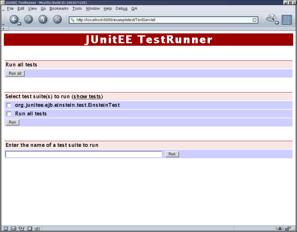

| JUnitEE |
| $Revision: 1.15 $ |
| Home |
| News |
| Tutorial |
| JavaDoc |
| Download |
| Contact |
| User's Guide |
JUnitEE is an extension to the  JUnit test framework. JUnit provides the framework for writing
your unit tests, and JUnitEE gives you the possibility to run these tests inside your application server. This has the advantage
of testing your EJB/servlet-based application in the same environment it will run when in production.
JUnit test framework. JUnit provides the framework for writing
your unit tests, and JUnitEE gives you the possibility to run these tests inside your application server. This has the advantage
of testing your EJB/servlet-based application in the same environment it will run when in production.
You may operate the JUnit TestRunner in one of two different modes:
- in
Basic Test Modethe TestRunner will execute a set of test suites which has to be defined manually - in
Smart Test Modethe TestRunner will try to find all test suites available in one or more jar files included in the .war file and will allow you to choose which of the tests should be run
This guide will tell you how to package JUnitEE and your test cases to a deployable web archive. It will also describe the user interface of the JUnitEE TestRunner and how to integrate JUnitEE with your Ant build process by using the JUnitEE Ant tasks. Finally there are some SecurityManager issues related to the deployment of JUnitEE.
| Packaging JUnitEE |
Adding JUnitEE to your server application is quite easy. You just have to create a web application which contains the
JUnitEE Test Servlet and your test classes. Place junitee.jar and junit.jar and the jar containing your tests
in the WEB-INF/lib directory of the web archive. The minimal deployment descriptor contains the declaration of the JUnitEE servlet and
the corresponding servlet mapping. JUnitEE provides three servlets which differ in the format of the test report they generate by default and the thread
mode they use. In general you will use org.junitee.servlet.JUnitEEServlet:
<?xml version="1.0"?>
<!DOCTYPE web-app
PUBLIC "-//Sun Microsystems, Inc.//DTD Web Application 2.2//EN"
"http://java.sun.com/j2ee/dtds/web-app_2_2.dtd">
<web-app>
<display-name> Einstein Unit Tester Web Application </display-name>
<servlet>
<servlet-name>JUnitEETestServlet</servlet-name>
<description>JUnitEE test runner</description>
<servlet-class>org.junitee.servlet.JUnitEEServlet</servlet-class>
</servlet>
<servlet-mapping>
<servlet-name>JUnitEETestServlet</servlet-name>
<url-pattern>/TestServlet/*</url-pattern>
</servlet-mapping>
</web-app>
This servlet generates html output by default and does not fork a new thread for test execution.
Another servlet provided by JUnitEE is org.junitee.servlet.JUnitEEThreadedServlet which by default forks a new thread for
test execution. This is usefull if test execution takes a long time and therefore could be interrupted by socket or browser timeouts. For the other
servlets you get the same behaviour by using the thread parameter in the request. To use this servlet the
deployment descriptor looks like this:
<?xml version="1.0"?>
<!DOCTYPE web-app
PUBLIC "-//Sun Microsystems, Inc.//DTD Web Application 2.2//EN"
"http://java.sun.com/j2ee/dtds/web-app_2_2.dtd">
<web-app>
<display-name> Einstein Unit Tester Web Application </display-name>
<servlet>
<servlet-name>JUnitEETestServlet</servlet-name>
<description>JUnitEE test runner</description>
<servlet-class>org.junitee.servlet.JUnitEEThreadedServlet</servlet-class>
</servlet>
<servlet-mapping>
<servlet-name>JUnitEETestServlet</servlet-name>
<url-pattern>/TestServlet/*</url-pattern>
</servlet-mapping>
</web-app>
In case you prefer xml output you use org.junitee.servlet.JUnitEEXMLServlet:
<?xml version="1.0"?>
<!DOCTYPE web-app
PUBLIC "-//Sun Microsystems, Inc.//DTD Web Application 2.2//EN"
"http://java.sun.com/j2ee/dtds/web-app_2_2.dtd">
<web-app>
<display-name> Einstein Unit Tester Web Application </display-name>
<servlet>
<servlet-name>JUnitEETestServlet</servlet-name>
<description>JUnitEE test runner</description>
<servlet-class>org.junitee.servlet.JUnitEEXMLServlet</servlet-class>
</servlet>
<servlet-mapping>
<servlet-name>JUnitEETestServlet</servlet-name>
<url-pattern>/TestServlet/*</url-pattern>
</servlet-mapping>
</web-app>
All three servlets support the output request parameter to overwrite the default behaviour, so it is possible
to use the org.junitee.servlet.JUnitEEServlet to produce xml output and to get html output out of the org.junitee.servlet.JUnitEEXMLServlet.
To use the Smart Test Mode of JUnitEE you have to tell the servlet which jar file in the WEB-INF/lib folder of your
war file contains your test cases. Therefore you have to add an init parameter named searchResources to the servlet declaration. Considering
that the jar file WEB-INF/lib/test.jar contains the test classes, this looks like
<servlet>
<servlet-name>JUnitEETestServlet</servlet-name>
<description>JUnitEE test runner</description>
<servlet-class>org.junitee.servlet.JUnitEEServlet</servlet-class>
<init-param>
<param-name>searchResources</param-name>
<param-value>test.jar</param-value>
</init-param>
</servlet>
Note that the parameter value is the name of the jar file relative to WEB-INF/lib. You may also tell JUnitEE to search more than one
file for your tests. In this case the parameter value is a comma-separated list of file names like in this example:
<servlet>
<servlet-name>JUnitEETestServlet</servlet-name>
<description>JUnitEE test runner</description>
<servlet-class>org.junite.servlet.JUnitEEServlet</servlet-class>
<init-param>
<param-name>searchResources</param-name>
<param-value>unit-test.jar, functional-test.jar</param-value>
</init-param>
</servlet>
An alternative way to use the Smart Test Mode is to add a text file named WEB-INF/testCase.txt to your .war file.
If no jar files are specified, JUnitEE will look for that file and use the list of test case names declared in testCase.txt instead.
testCase.txt has to be a simple text file containing one test class name per line like in this example:
# This is a comment
org.junitee.example.SimpleUnitTests
org.junitee.example.ComplexUnitTests
And finally there is the option to use the search request parameter to specify the resources.
In case you want your test servlet to generate xml output it is possible to define the URL of a stylesheet by using the init parameter named
xslStylesheet:
<servlet>
<servlet-name>JUnitEETestServlet</servlet-name>
<description>JUnitEE test runner</description>
<servlet-class>org.junitee.servlet.JUnitEEXMLServlet</servlet-class>
<init-param>
<param-name>xslStylesheet</param-name>
<param-value>myStylesheet</param-value>
</init-param>
</servlet>
JUnitEE will use this information to add a stylesheet instruction to the generated xml. Another way to obtain the same result is to use the
xsl request parameter.
The final step is to package the test.war together with your application in an EAR and to deploy it to your application server.
Now you may start your tests from any browser you like.
The JUnitEE distribution contains an Ant task which automates the creation of the
test.war including the deployment descriptor and testCase.txt, so you don't have to create the web archive manually.
But anyway it's good to know what's going on behind the scenes.
| JUnitEE TestRunner |
After deploying your test.war the JUnitEE TestRunner is ready to execute your tests. Enter the URL to the JUnitEE servlet in your
browser - for the example above this would be http://my.host:port/test/TestServlet where test is the name of the .war and
TestServlet is the URL pattern the JUnitEE servlet is mapped to. Your browser should now display the user interface of the JUnitEE TestRunner:
|  |
You may now enter the name of your test class in the text field or choose from the list of available test cases. In any case press the
corresponding Run button to start execution of the tests. (Note that the lis of available test cases is shown only if the
servlet is configured for the Smart Test Mode).
It is also possible to expand all the view to display all available tests. Use the link labeled "show tests" to list all tests:
 |
Now it is possible to select a single test for execution. Use the link labeled "hide tests" to toggle the view back to display test suites only.
After some time - it depends on how long the selected tests will run - your browser will display the test report generated by the JUnitEE TestRunner like in this example:
The test report is separated in three parts:
- the summary shows the list of all executed test suites and their test result
- for each test suite there is a list of executed tests with their respective test results
- for each failed test there is a detailed description of the reason for the failure
The icons showing the result of a test suite/test have the following meaning:
| test suite/test successful | |
| test suite/test failed because an assertion failed | |
| test suite/test failed because of an error |
By clicking on one of this icons the corresponding test suite or test will be executed again which is useful if you would like to debug failed tests.
By clicking on the icon in the summary the browser will scroll to the list of corresponding tests. By clicking on the icon in the list of executed tests (available only for failed tests) the browser will scroll to the description of the failure/error.
Here is a description of all request parameters the JUnitEE servlet will accept:
| JUnitEE servlet request parameters | ||
| Parameter | Description | Required |
| suite | Defines the class name of the test suite to be executed by the test servlet. This parameter may be used multiple times in one request. | YES |
| all | Tell the servlet to run all tests it has found. This will work only if one of the
following conditions is true:
| No |
| search | Define the resource the servlet should use to search for test classes. | If there is no searchResource init parameter and no WEB-INF/testCase.txt |
| output | Tell the servlet to generate the test report in the given format. JUnitEE supports
| No |
| xsl | Define the URL of an xsl stylesheet. This URL will be used to generate a stylesheet instruction at the beginning of the xml output (in case xml output is active). | No |
| thread | Tell the servlet to fork a new thread to run the tests. A thread will be
forked if this parameter is true and two or more suite parameters or all is set.You should use this feature for html output only, because in this case the output will be refreshed in the browser until all tests are
finished or test execution is stopped by the user. For xml output there is not way for an automatic refresh. | No |
| JUnitEE Ant Task |
JUnitEE provides two Ant task to integrate execution of your JUnitEE tests with your build process:
- the JUnitEEWar task creates the .war file you need to run your tests inside a servlet container (similar to the War task included in the standard Ant distribution)
- the JUnitEE task allows you to start execution of your server-side tests from within your ant build script (similar to the JUnit task included in the standard Ant distribution)
To use these tasks you have to declare them as external tasks in your build script:
<taskdef name="junitee" classname="org.junitee.anttask.JUnitEETask">
<classpath>
<pathelement location="lib/junitee-anttask.jar"/>
</classpath>
</taskdef>
<taskdef name="juniteewar" classname="org.junitee.anttask.JUnitEEWarTask">
<classpath>
<pathelement location="lib/junitee-anttask.jar"/>
</classpath>
</taskdef>
The JUnitEETask supports the following attributes:
| JUnitEETask attributes | ||
| Attribute | Description | Required |
| url | URL of the JUnitEE Test Servlet | YES |
| haltonfailure | Stop the build if a failure occurs | No |
| haltonerror | Stop the build if an error or a failure occurs | No |
| printsummary | Print a summary of all executed tests | No |
| filtertrace | Filter the stack trace in case of an error/failure. This removes JUnit methods from the stack trace. | No; default is true |
The results of the tests can be printed in different formats. To specify the format of the output <junitee> may contain
nested <formatter> elements. The output of a formatter will always be sent to a file, unless you set the usefile
attribute to false. The name of the file is determined by the name of the test and can be set by the outfile attribute of <test>.
There are two predefined formatters - one prints the test results in XML format, the other emits plain text. The formatter named plain
will only print detailed information for testcases that failed, while plain gives a little statistics for all test cases.
Custom formatters that need to implement org.junitee.anttask.JUnitEEResultFormatter can be specified using the classname attribute.
The formatter element supports the following attributes:
| Formatter attributes | ||
| Attribute | Description | Required |
| type | Use a predefined formatter (either xml, plain, or brief). | YES, if classname is not set. |
| classname | Name of a custom formatter class. | YES, if type is not set. |
| extension | Extension to append to the output filename. | YES, if classname has been specified. |
| usefile | Boolean that determines whether output should be sent to a file. | No; default is true |
The task requires a set of nested <test> elements to define which tests to run. Each <test> may contain nested <formatter> elements which are added
to the list of formatters specified by <junitee>. The following attributes are supported by <test>:
| Test attributes | ||
| Attribute | Description | Required |
| name | Name of the test class to be executed | If runall is not set |
| runall | Execute all tests | If name is not set |
| resource | Comma-separated list of all resources containing test classes | If runall is set and the test servlet is not configured for Smart Test Mode. This attribute will overwrite the configuration of the servlet. |
| failureproperty | Specify a property that will be set in case a this test failes | No |
| errorproperty | Specify a property that will be set in case an error caused this test to fail | No |
| haltonfailure | Stop the build if this test fails | No |
| haltonerror | Stop the build if an error or a failure occurs while running this test | No |
| filtertrace | Filter the stack trace in case of an error/failure. This overwrites the setting of the task. | No |
| outfile | Base name of the test result. The full filename is determined by this attribute, the name of the test and the extension of the formatter. | No; default is TEST-, or TEST-ALL- if runall is set for this test. |
| todir | Directory to write the reports to. | No; default is the current directory. |
| if | Only run test if the named property is set. | No |
| unless | Only run test if the named property is not set. | No |
The following example will run the test suite org.infohazard.test.EinsteinTest and halt the build if a failure occurs.
<target name="run-tests">
<junitee url="http://localhost:8080/exampletest/TestServlet">
<test name="org.infohazard.test.EinsteinTest" haltonfailure="true" />
</junitee>
</target>
The next example will run all tests available in WEB-INF/lib/mytests.jar.
<target name="run-tests">
<junitee url="http://localhost:8080/exampletest/TestServlet">
<test runall="true" resource="WEB-INF/lib/mytests.jar" />
</junitee>
</target>
The JUnitEEWarTask is an extension of the War task available in the standard Ant distribution. In addition to the
attributes of the War task the JUnitEEWarTask supports the following attributes:
| JUnitEEWarTask attributes | ||
| Attribute | Description | Required |
| testjarname | This parameter defines the name of the .jar
file which will contain all the test classes defined in the nested <classes> element.
This file will then be placed in the WEB-INF/lib directory of the war file.
If this parameter is not set, the test classes will be stored in the WEB-INF/classes directory of the war
file. | No |
| servletclass | Specify the servlet class which will be used to generate the web.xml. | No |
| webxml | The deployment descriptor to use (WEB-INF/web.xml). This attribute workes like in the War task, except that
if not set, web.xml will be generated. | No |
In addition to the War task, the JUnitEEWarTask supports nested <testcase> elements which specify a
FileSet. All files included in this fileset are the Junit test cases which will be executed if all=true is used when calling the JUnitEE servlet.
To use EJBs from your test cases it is possible to declare EJB references which should be included
in the generated deployment descriptor of the war file using nested <ejbRef> elements. An <ejbRef> element supports the following attributes:
| ejbRef attributes | ||
| Attribute | Description | Required | ejbRefName | set <ejb-ref-name> value | Yes | ejbRefType | set <ejb-ref-type> value | Yes | home | set <home> value | Yes | remote | set <remote> value | Yes |
Finally the JUnitEEWarTask supports nested <resourceRef> elements to delcare resource reference entries to be included
in the generated deployment descriptor of the war file. <resourceRef> elements provide the following attributes:
| resourceRef attributes | ||
| Attribute | Description | Required | resRefName | set <res-ref-name> value | Yes | resType | set <res-type> value | Yes | resAuth | set <res-auth> value | Yes |
Consider for the following example that you have a project with the following characteristics:
- the classes to test are located in the directory
build/classes - the test classes are compiled to the directory
build/test - the test classe names have
Testas their prefix - the
.jarfiles you need are stored in thelibdirectory
In this case the following Ant target will build a file called myTest.war which contains
junit.jarandjunitee.jarunderWEB-INF/lib- the classes to test and all test cases under
WEB-INF/classes - a file named
WEB-INF/testCase.txtwhich contains a list of all test case names - a file named
index.htmlwhich allows you to run tests manually using your browser - the deployment descriptor
WEB-INF/web.xmlwhich makesmyTest.wara deployable web archive
<juniteewar destFile="myTest.war">
<lib dir="lib" includes="junitee.jar"/>
<lib dir="lib" includes="junit.jar"/>
<classes dir="build/classes">
<include name="**/*.class"/>
</classes>
<classes dir="build/test">
<include name="**/*.class"/>
</classes>
<testcases dir="build/test">
<include name="**/Test*.class"/>
</testcases>
</juniteewar>
| Jakarta Cactus support |
All JUnitEE servlets set the system property
cactus.contextURL to the context of the web application the JUnitEE servlet is part of. Therefore you don't have to specify
this property another way (e.g. by providing a client.properties file as part of your web application).
| SecurityManager issues |
JUnitEE takes some actions which are under control of the Java security manager:
- set the system property
cactus.contextURL - read the file
junit.propertiesfrom user home
grant {
permission java.util.PropertyPermission "cactus.contextURL", "read,write";
// replace <USERHOME> with your home directory
permission java.io.FilePermission "<USERHOME>\junit.properties", "read";
};
| This project is hosted by |
|